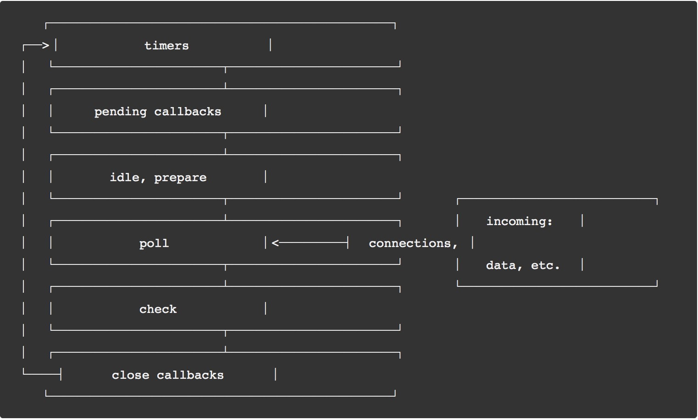

<!DOCTYPE html>
<html>
<head><meta name="generator" content="Hexo 3.9.0">
  <meta charset="utf-8">
  

  
  <title>JS 异步处理系列（二）- Node Event Loop | QINGGUOING</title>
  <meta name="viewport" content="width=device-width, initial-scale=1, maximum-scale=1">
  <meta name="description" content="本文是 JavaScript 中的异步处理系列第二篇，介绍 NodeJS 中的事件循环（event loop）概念和原理。">
<meta name="keywords" content="JS 异步处理系列,EventLoop,Node">
<meta property="og:type" content="article">
<meta property="og:title" content="JS 异步处理系列（二）- Node Event Loop">
<meta property="og:url" content="https://qingguoing.com/2019/05/14/JS-异步处理系列（二）-Node-Event-Loop/index.html">
<meta property="og:site_name" content="QINGGUOING">
<meta property="og:description" content="本文是 JavaScript 中的异步处理系列第二篇，介绍 NodeJS 中的事件循环（event loop）概念和原理。">
<meta property="og:locale" content="default">
<meta property="og:image" content="https://qingguoing.com/2019/05/14/JS-异步处理系列（二）-Node-Event-Loop/eventloop.jpeg">
<meta property="og:updated_time" content="2019-06-29T15:01:39.334Z">
<meta name="twitter:card" content="summary">
<meta name="twitter:title" content="JS 异步处理系列（二）- Node Event Loop">
<meta name="twitter:description" content="本文是 JavaScript 中的异步处理系列第二篇，介绍 NodeJS 中的事件循环（event loop）概念和原理。">
<meta name="twitter:image" content="https://qingguoing.com/2019/05/14/JS-异步处理系列（二）-Node-Event-Loop/eventloop.jpeg">
  
    <link rel="alternate" href="/atom.xml" title="QINGGUOING" type="application/atom+xml">
  
  
    <link rel="icon" href="/favicon.ico">
  
  
    <link href="//fonts.googleapis.com/css?family=Source+Code+Pro" rel="stylesheet" type="text/css">
  
  <link rel="stylesheet" href="/css/style.css">
</head>
</html>
<body>
  <div id="container">
    <div id="wrap">
      <header id="header">
  <div id="banner"></div>
  <div id="header-outer" class="outer">
    <div id="header-title" class="inner">
      <h1 id="logo-wrap">
        <a href="/" id="logo">QINGGUOING</a>
      </h1>
      
    </div>
    <div id="header-inner" class="inner">
      <nav id="main-nav">
        <a id="main-nav-toggle" class="nav-icon"></a>
        
          <a class="main-nav-link" href="/">Home</a>
        
          <a class="main-nav-link" href="/archives">Archives</a>
        
      </nav>
      <nav id="sub-nav">
        
          <a id="nav-rss-link" class="nav-icon" href="/atom.xml" title="RSS Feed"></a>
        
        <a id="nav-search-btn" class="nav-icon" title="Search"></a>
      </nav>
      <div id="search-form-wrap">
        <form action="//google.com/search" method="get" accept-charset="UTF-8" class="search-form"><input type="search" name="q" class="search-form-input" placeholder="Search"><button type="submit" class="search-form-submit">&#xF002;</button><input type="hidden" name="sitesearch" value="https://qingguoing.com"></form>
      </div>
    </div>
  </div>
</header>
      <div class="outer">
        <section id="main"><article id="post-JS-异步处理系列（二）-Node-Event-Loop" class="article article-type-post" itemscope itemprop="blogPost">
  <div class="article-meta">
    <a href="/2019/05/14/JS-异步处理系列（二）-Node-Event-Loop/" class="article-date">
  <time datetime="2019-05-14T15:07:16.000Z" itemprop="datePublished">2019-05-14</time>
</a>
    
  <div class="article-category">
    <a class="article-category-link" href="/categories/JavaScript/">JavaScript</a>
  </div>

  </div>
  <div class="article-inner">
    
    
      <header class="article-header">
        
  
    <h1 class="article-title" itemprop="name">
      JS 异步处理系列（二）- Node Event Loop
    </h1>
  

      </header>
    
    <div class="article-entry" itemprop="articleBody">
      
        <p>本文是 JavaScript 中的异步处理系列第二篇，介绍 NodeJS 中的事件循环（event loop）概念和原理。</p>
<a id="more"></a>
<h3 id="前言"><a href="#前言" class="headerlink" title="前言"></a>前言</h3><p>第一篇中，我们介绍了浏览器环境下的 event loop 模型，而 NodeJS 也有对应的 event loop 模型，并且和浏览器下的事件循环完全不同。本文着重介绍 NodeJS 下的事件循环模型。</p>
<h3 id="事件循环"><a href="#事件循环" class="headerlink" title="事件循环"></a>事件循环</h3><p>事件循环是 Node.js 处理非阻塞 I/O 操作的机制——尽管 JavaScript 是单线程处理的——当有可能的时候，它们会把操作转移到系统内核中去。</p>
<p></p>
<p>注：每个框框里每一步都是事件循环机制的一个阶段。</p>
<p>每个阶段都有一个 FIFO 队列来执行回调。虽然每个阶段都是特殊的，但通常情况下，当事件循环进入给定的阶段时，它将执行特定于该阶段的任何操作，然后在该阶段的队列中执行回调，直到队列用尽或最大回调数已执行。当该队列已用尽或达到回调限制，事件循环将移动到下一阶段。</p>
<ul>
<li><code>timers</code>：本阶段执行已经安排的 setTimeout() 和 setInterval() 的回调函数。</li>
<li><code>pending callbacks</code>：执行延迟到下一个循环迭代的 I/O 回调。</li>
<li><code>idle, prepare</code>：仅系统内部使用。</li>
<li><code>poll</code>：检索新的 I/O 事件;执行与 I/O 相关的回调（几乎所有情况下，除了关闭的回调函数，它们由计时器和 setImmediate() 排定的之外），其余情况 node 将在此处阻塞。</li>
<li><code>check</code>：setImmediate() 回调函数在这里执行。</li>
<li><code>close callbacks</code>：一些准备关闭的回调函数，如：socket.on(‘close’, …)。</li>
</ul>
<p>在每次运行的事件循环之间，Node.js 检查它是否在等待任何异步 I/O 或计时器，如果没有的话，则关闭干净。</p>
<h3 id="setImmediate-vs-setTimeout"><a href="#setImmediate-vs-setTimeout" class="headerlink" title="setImmediate() vs setTimeout()"></a><code>setImmediate()</code> vs <code>setTimeout()</code></h3><p><code>setImmediate()</code> 和 <code>setTimeout()</code> 很类似，但何时调用行为完全不同。</p>
<ul>
<li><code>setImmediate()</code> 设计为在当前 轮询 阶段完成后执行脚本。</li>
<li><code>setTimeout()</code> 计划在毫秒的最小阈值经过后运行的脚本。</li>
</ul>
<p>执行计时器的顺序将根据调用它们的上下文而异。如果二者都从主模块内调用，则计时将受进程性能的约束。</p>
<p>例如，如果运行的是不属于 I/O 周期（即主模块）的以下脚本，则执行两个计时器的顺序是非确定性的，因为它受进程性能的约束：</p>
<figure class="highlight js"><table><tr><td class="gutter"><pre><span class="line">1</span><br><span class="line">2</span><br><span class="line">3</span><br><span class="line">4</span><br><span class="line">5</span><br><span class="line">6</span><br><span class="line">7</span><br></pre></td><td class="code"><pre><span class="line">setTimeout(<span class="function"><span class="params">()</span> =&gt;</span> &#123;</span><br><span class="line">  <span class="built_in">console</span>.log(<span class="string">'timeout'</span>);</span><br><span class="line">&#125;, <span class="number">0</span>);</span><br><span class="line"></span><br><span class="line">setImmediate(<span class="function"><span class="params">()</span> =&gt;</span> &#123;</span><br><span class="line">  <span class="built_in">console</span>.log(<span class="string">'immediate'</span>);</span><br><span class="line">&#125;);</span><br></pre></td></tr></table></figure>
<p>但是，如果你把这两个函数放入一个 I/O 循环内调用，<code>setImmediate</code> 总是被优先调用：</p>
<figure class="highlight js"><table><tr><td class="gutter"><pre><span class="line">1</span><br><span class="line">2</span><br><span class="line">3</span><br><span class="line">4</span><br><span class="line">5</span><br><span class="line">6</span><br><span class="line">7</span><br><span class="line">8</span><br><span class="line">9</span><br><span class="line">10</span><br></pre></td><td class="code"><pre><span class="line"><span class="keyword">const</span> fs = <span class="built_in">require</span>(<span class="string">'fs'</span>);</span><br><span class="line"></span><br><span class="line">fs.readFile(__filename, () =&gt; &#123;</span><br><span class="line">  setTimeout(<span class="function"><span class="params">()</span> =&gt;</span> &#123;</span><br><span class="line">    <span class="built_in">console</span>.log(<span class="string">'timeout'</span>);</span><br><span class="line">  &#125;, <span class="number">0</span>);</span><br><span class="line">  setImmediate(<span class="function"><span class="params">()</span> =&gt;</span> &#123;</span><br><span class="line">    <span class="built_in">console</span>.log(<span class="string">'immediate'</span>);</span><br><span class="line">  &#125;);</span><br><span class="line">&#125;);</span><br></pre></td></tr></table></figure>
<p>使用 <code>setImmediate()</code> 超过 <code>setTimeout()</code> 的主要优点是，如果在 I/O 周期内，<code>setImmediate()</code> 总是比其它计时器先执行，不管有多少个其它计时器。</p>
<h3 id="process-nextTick"><a href="#process-nextTick" class="headerlink" title="process.nextTick()"></a><code>process.nextTick()</code></h3><p>任何时候在给定的阶段中调用 <code>process.nextTick()</code>，所有传递到 <code>process.nextTick()</code> 的回调将在事件循环继续之前得到解决。即无论事件循环的当前阶段如何，都将在当前操作完成后处理 <code>nextTickQueue</code>。</p>
<h3 id="总结"><a href="#总结" class="headerlink" title="总结"></a>总结</h3><p>本文介绍了 NodeJS 中的 event loop 模型。</p>
<p>参考链接：</p>
<ol>
<li><a href="https://nodejs.org/en/docs/guides/event-loop-timers-and-nexttick/" target="_blank" rel="noopener">The Node.js Event Loop, Timers, and process.nextTick()</a></li>
</ol>

      
    </div>
    <footer class="article-footer">
      <a data-url="https://qingguoing.com/2019/05/14/JS-异步处理系列（二）-Node-Event-Loop/" data-id="cjxhnmik6000fjp8cgnkcz2gi" class="article-share-link">Share</a>
      
      
  <ul class="article-tag-list"><li class="article-tag-list-item"><a class="article-tag-list-link" href="/tags/EventLoop/">EventLoop</a></li><li class="article-tag-list-item"><a class="article-tag-list-link" href="/tags/JS-异步处理系列/">JS 异步处理系列</a></li><li class="article-tag-list-item"><a class="article-tag-list-link" href="/tags/Node/">Node</a></li></ul>

    </footer>
  </div>
  
    
<nav id="article-nav">
  
    <a href="/2019/05/19/JS-异步处理系列（三）-Promise/" id="article-nav-newer" class="article-nav-link-wrap">
      <strong class="article-nav-caption">Newer</strong>
      <div class="article-nav-title">
        
          JS 异步处理系列（三）- Promise
        
      </div>
    </a>
  
  
    <a href="/2019/05/13/JS-异步处理系列（一）-event loop/" id="article-nav-older" class="article-nav-link-wrap">
      <strong class="article-nav-caption">Older</strong>
      <div class="article-nav-title">JS 异步处理系列（一）—— Event Loop</div>
    </a>
  
</nav>

  
</article>

</section>
        
          <aside id="sidebar">
  
    
  <div class="widget-wrap">
    <h3 class="widget-title">Categories</h3>
    <div class="widget">
      <ul class="category-list"><li class="category-list-item"><a class="category-list-link" href="/categories/Babel/">Babel</a></li><li class="category-list-item"><a class="category-list-link" href="/categories/Diary/">Diary</a></li><li class="category-list-item"><a class="category-list-link" href="/categories/HTTP/">HTTP</a></li><li class="category-list-item"><a class="category-list-link" href="/categories/JavaScript/">JavaScript</a></li><li class="category-list-item"><a class="category-list-link" href="/categories/Linux/">Linux</a></li><li class="category-list-item"><a class="category-list-link" href="/categories/Node/">Node</a></li><li class="category-list-item"><a class="category-list-link" href="/categories/React/">React</a></li><li class="category-list-item"><a class="category-list-link" href="/categories/Tools/">Tools</a></li><li class="category-list-item"><a class="category-list-link" href="/categories/python/">python</a></li><li class="category-list-item"><a class="category-list-link" href="/categories/技术论坛/">技术论坛</a></li></ul>
    </div>
  </div>


  
    
  <div class="widget-wrap">
    <h3 class="widget-title">Tags</h3>
    <div class="widget">
      <ul class="tag-list"><li class="tag-list-item"><a class="tag-list-link" href="/tags/Async/">Async</a></li><li class="tag-list-item"><a class="tag-list-link" href="/tags/D2/">D2</a></li><li class="tag-list-item"><a class="tag-list-link" href="/tags/ES6/">ES6</a></li><li class="tag-list-item"><a class="tag-list-link" href="/tags/EventLoop/">EventLoop</a></li><li class="tag-list-item"><a class="tag-list-link" href="/tags/Flux/">Flux</a></li><li class="tag-list-item"><a class="tag-list-link" href="/tags/H5/">H5</a></li><li class="tag-list-item"><a class="tag-list-link" href="/tags/HTTP/">HTTP</a></li><li class="tag-list-item"><a class="tag-list-link" href="/tags/JS-异步处理系列/">JS 异步处理系列</a></li><li class="tag-list-item"><a class="tag-list-link" href="/tags/Node/">Node</a></li><li class="tag-list-item"><a class="tag-list-link" href="/tags/Performance/">Performance</a></li><li class="tag-list-item"><a class="tag-list-link" href="/tags/Promise/">Promise</a></li><li class="tag-list-item"><a class="tag-list-link" href="/tags/Redux/">Redux</a></li><li class="tag-list-item"><a class="tag-list-link" href="/tags/Vue/">Vue</a></li><li class="tag-list-item"><a class="tag-list-link" href="/tags/awk/">awk</a></li><li class="tag-list-item"><a class="tag-list-link" href="/tags/babel-plugin/">babel-plugin</a></li><li class="tag-list-item"><a class="tag-list-link" href="/tags/koa/">koa</a></li><li class="tag-list-item"><a class="tag-list-link" href="/tags/learning/">learning</a></li><li class="tag-list-item"><a class="tag-list-link" href="/tags/python/">python</a></li><li class="tag-list-item"><a class="tag-list-link" href="/tags/tools/">tools</a></li><li class="tag-list-item"><a class="tag-list-link" href="/tags/vscode/">vscode</a></li><li class="tag-list-item"><a class="tag-list-link" href="/tags/生活随笔/">生活随笔</a></li><li class="tag-list-item"><a class="tag-list-link" href="/tags/自动化测试/">自动化测试</a></li></ul>
    </div>
  </div>


  
    
  <div class="widget-wrap">
    <h3 class="widget-title">Tag Cloud</h3>
    <div class="widget tagcloud">
      <a href="/tags/Async/" style="font-size: 10px;">Async</a> <a href="/tags/D2/" style="font-size: 10px;">D2</a> <a href="/tags/ES6/" style="font-size: 16.67px;">ES6</a> <a href="/tags/EventLoop/" style="font-size: 13.33px;">EventLoop</a> <a href="/tags/Flux/" style="font-size: 13.33px;">Flux</a> <a href="/tags/H5/" style="font-size: 10px;">H5</a> <a href="/tags/HTTP/" style="font-size: 10px;">HTTP</a> <a href="/tags/JS-异步处理系列/" style="font-size: 20px;">JS 异步处理系列</a> <a href="/tags/Node/" style="font-size: 10px;">Node</a> <a href="/tags/Performance/" style="font-size: 10px;">Performance</a> <a href="/tags/Promise/" style="font-size: 10px;">Promise</a> <a href="/tags/Redux/" style="font-size: 10px;">Redux</a> <a href="/tags/Vue/" style="font-size: 10px;">Vue</a> <a href="/tags/awk/" style="font-size: 10px;">awk</a> <a href="/tags/babel-plugin/" style="font-size: 10px;">babel-plugin</a> <a href="/tags/koa/" style="font-size: 13.33px;">koa</a> <a href="/tags/learning/" style="font-size: 10px;">learning</a> <a href="/tags/python/" style="font-size: 10px;">python</a> <a href="/tags/tools/" style="font-size: 10px;">tools</a> <a href="/tags/vscode/" style="font-size: 10px;">vscode</a> <a href="/tags/生活随笔/" style="font-size: 10px;">生活随笔</a> <a href="/tags/自动化测试/" style="font-size: 10px;">自动化测试</a>
    </div>
  </div>

  
    
  <div class="widget-wrap">
    <h3 class="widget-title">Archives</h3>
    <div class="widget">
      <ul class="archive-list"><li class="archive-list-item"><a class="archive-list-link" href="/archives/2019/06/">June 2019</a></li><li class="archive-list-item"><a class="archive-list-link" href="/archives/2019/05/">May 2019</a></li><li class="archive-list-item"><a class="archive-list-link" href="/archives/2019/01/">January 2019</a></li><li class="archive-list-item"><a class="archive-list-link" href="/archives/2018/11/">November 2018</a></li><li class="archive-list-item"><a class="archive-list-link" href="/archives/2018/10/">October 2018</a></li><li class="archive-list-item"><a class="archive-list-link" href="/archives/2018/07/">July 2018</a></li><li class="archive-list-item"><a class="archive-list-link" href="/archives/2018/01/">January 2018</a></li><li class="archive-list-item"><a class="archive-list-link" href="/archives/2017/10/">October 2017</a></li><li class="archive-list-item"><a class="archive-list-link" href="/archives/2017/09/">September 2017</a></li><li class="archive-list-item"><a class="archive-list-link" href="/archives/2017/08/">August 2017</a></li><li class="archive-list-item"><a class="archive-list-link" href="/archives/2017/07/">July 2017</a></li><li class="archive-list-item"><a class="archive-list-link" href="/archives/2017/04/">April 2017</a></li><li class="archive-list-item"><a class="archive-list-link" href="/archives/2016/08/">August 2016</a></li></ul>
    </div>
  </div>


  
    
  <div class="widget-wrap">
    <h3 class="widget-title">Recent Posts</h3>
    <div class="widget">
      <ul>
        
          <li>
            <a href="/2019/06/27/自动处理对象结构中-null-字段的-babel-插件/">自动处理对象结构中 null 字段的 babel 插件</a>
          </li>
        
          <li>
            <a href="/2019/05/26/如何编写好一个测试用例/">如何编写好一个测试用例</a>
          </li>
        
          <li>
            <a href="/2019/05/20/JS-异步处理系列（四）-async-await/">JS 异步处理系列（四）- async &amp; await</a>
          </li>
        
          <li>
            <a href="/2019/05/19/JS-异步处理系列（三）-Promise/">JS 异步处理系列（三）- Promise</a>
          </li>
        
          <li>
            <a href="/2019/05/14/JS-异步处理系列（二）-Node-Event-Loop/">JS 异步处理系列（二）- Node Event Loop</a>
          </li>
        
      </ul>
    </div>
  </div>

  
</aside>
        
      </div>
      <footer id="footer">
  
  <div class="outer">
    <div id="footer-info" class="inner">
      &copy; 2019 qingguoing<br>
      Powered by <a href="http://hexo.io/" target="_blank">Hexo</a>
    </div>
  </div>
</footer>
    </div>
    <nav id="mobile-nav">
  
    <a href="/" class="mobile-nav-link">Home</a>
  
    <a href="/archives" class="mobile-nav-link">Archives</a>
  
</nav>
    

<script src="//ajax.googleapis.com/ajax/libs/jquery/2.0.3/jquery.min.js"></script>


  <link rel="stylesheet" href="/fancybox/jquery.fancybox.css">
  <script src="/fancybox/jquery.fancybox.pack.js"></script>


<script src="/js/script.js"></script>


  </div>
</body>
</html>